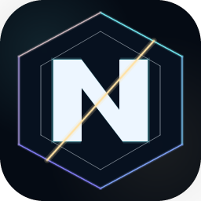

이번 주 수요일 05:00부터 다음 수요일 05:00까지 저장된 4개 던전의 최종 보스 확정 처치 기록만 사용합니다.

NotMeter 던전 통계
직업별 상위 25% DPS 기준으로 정렬합니다
CHARACTER LOOKUP
캐릭터 검색
닉네임으로 장비·스킬·랭킹을 바로 확인하세요
최근 검색한 캐릭터
최대 10개까지 저장됩니다
AION2 ENGINE.INI
랭킹으로 돌아가기
그래픽 최적화 설정
현재 페이지에서 설정을 생성하며 상단 메뉴와 광고는 그대로 유지됩니다.
AION2 CHARACTER · OFFICIAL DATA
랭킹으로 돌아가기
캐릭터 정보
장비 옵션과 영혼 각인, 마석을 한 화면에서 비교할 수 있습니다.
공식 캐릭터 정보를 불러오는 중입니다
장비별 영혼 각인과 마석을 함께 확인하고 있습니다.
캐릭터 정보를 불러오지 못했습니다
잠시 후 다시 시도해 주세요.
FINAL BOSS · SHARE < 5% · THIS WEEK
최종 보스 기여도 통계
이번 주 주요 던전 최종 보스에서 직업별 기여도 5% 미만 발생 빈도를 비교합니다.
집계 기간—
최종 보스 기록—
플레이어 표본—
5% 미만—
이번 주 기여도 통계 캐시를 불러오는 중입니다
기여도 통계 캐시를 불러오지 못했습니다
이번 주 집계 가능한 최종 보스 기록이 아직 없습니다
——
5% 미만 발생률 높은 순기여도 통계는 어떻게 계산하나요?
처치기록에 저장된 기여도를 사용하며 5% 미만만 집계합니다. 과거 기록은 저장된 피해량과 보스 MAX HP로 같은 기준을 복원하고, 정확히 5%는 제외합니다.
한 캐릭터가 여러 번 참여하면 각 전투를 별도 표본으로 셉니다. 발생률은 5% 미만 표본 수 ÷ 해당 직업 전체 표본 수입니다.
서버·직업·파티원이 모두 확인되고 통계 유효성 검증을 통과한 완전한 기록만 사용합니다. 불완전하거나 변조가 의심되는 기록은 제외합니다.
이 지표는 보상 기준 미달이 발생한 빈도이며 직업 DPS 순위가 아닙니다. 파티 구성·공략 역할·숙련도 차이를 함께 고려해 해석해 주세요.
ALL TIME · ACCURACY · CRITICAL · HARD HIT · PERFECT
보스 저항 통계
강타·완벽 저항은 추정값을 표시하고, 치명타·회피는 수치 구간별 판정 표본으로 환산식을 검증합니다.
전체 기간 누적
치명타·회피는 유효 스탯 구간별 성공·실패를 분리해 수집하며, 검증된 환산식이 나오기 전에는 저항 수치를 표시하지 않습니다. 페리·막기는 회피와 별도 판정입니다.
—
전체 기간 누적
표시할 보스 정보가 없습니다.
실시간 스탯 비교
스탯 효율 계산기
현재 캐릭터에서 실제 피해 기대값을 높이는 스탯만 비교합니다.
1
딜미터기에서 복사한 내 스탯 붙여넣기
처치 기록 상단의 ‘내 스탯 복사’를 누른 뒤 붙여넣으면 필요한 피해 스탯만 자동 입력됩니다.
복사한 값을 기다리고 있습니다
표시 기준
현재 고정 계산식에서 피해 기대값을 직접 바꾸는 스탯만 표시합니다. 명중·방어·재시전 시간·전투 속도·속성 증폭·봉혼석·관통 등 미검증 항목은 계산 UI와 순위에서 제외됩니다.
사용 방법
- 딜미터기 처치 기록 상단에서 ‘내 스탯 복사’를 누릅니다.
- 이 페이지 상단 입력칸에 붙여넣습니다.
- 비교할 옵션 수치를 바꾸면 결과가 같은 위치에서 즉시 갱신됩니다.
필드보스 현황
—
—
필드보스 공유 캐시를 불러오는 중입니다
필드보스 캐시를 불러오지 못했습니다
선택한 서버에서 수집된 필드보스 시간이 아직 없습니다
CP 800K+ · PARTY GAP ≤100K · SHARE >10%
CP 보정 직업 DPS 통계
이번 주 검증 기록 중 CP 800K 이상·파티 CP 차이 100K 이하·기여도 10% 초과 표본을 같은 보스·10K CP 조건으로 맞춘 상대 지표입니다. 원시 DPS 순위가 아닙니다.
검증 기록만 수집
이번 주 통계 검증을 통과한 보스 처치 중 서버·캐릭터·직업이 확인되고 CP가 800K 이상인 기록만 사용합니다. 최대 CP 제한은 없습니다.
파티 표본 정제
파티원 정보가 모두 확인되고 CP 최고·최저 차이가 100K 이하인 전투만 사용하며, 파티 총 피해 기여도가 10%를 초과한 캐릭터만 표본에 포함합니다.
캐릭터별 대표 기록
같은 캐릭터·보스는 한 번만 반영합니다. 기록이 2회 이상이면 최대 상위 3회 중 두 번째 기록을 사용해 단발성 고점을 줄입니다.
동일 조건끼리 비교
같은 던전·보스·10K CP 안에서만 직업을 비교하고, 조건별 직업 중앙값을 100으로 환산합니다.
점수 산식
검증 통과 기록만
100점은 어떻게 계산하나요?
직업 백분위 DPS ÷ 동일 조건 직업 중앙값 × 100
점수 105는 같은 보스·같은 10K CP 조건의 직업 중앙값보다 관측 DPS가 약 5% 높다는 뜻입니다.
비교 셀 통과 조건
동일 보스·10K CP에 전체 대표 기록 30개 이상, 직업별 5개 이상, 비교 가능한 직업 4개 이상일 때만 계산합니다.
콘텐츠 균등 합산
CP 구간의 표본 수는 완만하게 반영하고, 최종 점수는 각 보스를 같은 비중의 기하평균으로 합쳐 인기 보스 쏠림을 줄입니다.
순위 공개 기준
P75 기준
신뢰도 A·B·C는 무엇인가요?
A고유 250명+ · 콘텐츠 75% 이상·최소 6개 · 95% 오차 ±4% 이하
B고유 100명+ · 콘텐츠 50% 이상·최소 4개 · 95% 오차 ±7% 이하
C고유 40명+ · 콘텐츠 최소 3개 · 95% 오차 ±12% 이하
—C 기준 미달은 표본 부족으로 표시하고 순위에서 제외
95% 신뢰구간은 콘텐츠를 하나씩 제외했을 때의 점수 변화와 고유 캐릭터 수를 함께 반영한 추정 범위입니다. 집계 가능한 전체 콘텐츠가 기준 개수보다 적으면 전체 콘텐츠 수를 기준으로 판정합니다.
직업 제외 필터
제외할 직업 선택
보고 싶지 않은 직업을 여러 개 선택하면 해당 직업이 한 명도 없는 파티 기록만 다시 집계합니다.
제외 직업 없음 · 전체 파티 집계
신뢰도 통계 캐시 갱신을 기다리는 중입니다.
신뢰도 기준을 충족한 직업 표본이 아직 없습니다.
이 통계를 어디까지 신뢰할 수 있나요?
CP 800K 이상·파티 CP 차이 100K 이하·기여도 10% 초과 조건과 보스·중복 캐릭터·표본 부족 보정을 적용한 이번 주 실전 비교 지표입니다. A가 가장 안정적이고 C는 참고 가능한 최소 기준입니다. 파티 버프·보스별 역할·숙련도 차이까지 완전히 제거할 수는 없으므로 밸런스의 절대 판정이나 이론상 최대 DPS가 아니라, 실제 수집 기록에서 반복 관측된 경향으로 해석해 주세요.
ALL CONTENT
클래스별 종합 TOP 10
모든 CP의 던전·악몽·허수아비 TOP 20 성적을 합산한 클래스별 종합 랭킹입니다.
점수 계산
1위 100점부터 20위 5점까지 5점 간격으로 환산합니다.
종합 랭킹 조건
종합 점수, 총합 DPS, 1위 횟수, TOP 20 진입 콘텐츠 수 순으로 TOP 10을 선정합니다.
중복 기록 처리
전체 CP·전체 기간 TOP 20의 실제 순위를 그대로 사용하며, 캐릭터별 최고 DPS와 갱신된 CP를 함께 반영합니다.
종합 랭킹 캐시 갱신을 기다리는 중입니다.
모든 콘텐츠 TOP 20 조건을 충족한 기록이 아직 없습니다.
| 순위 | 캐릭터 | 종합 점수 | 총합 DPS | 1위 횟수 | 콘텐츠 성적 |
|---|
DPS / nDPS 랭킹 기준
파티 버프를 포함한 기존 총 DPS 순위입니다.
던전
보스
CP
직접 CP 지정
400은 40만 CP이며, 최소값과 최대값 사이 기록만 조회합니다
랭킹 등록 기준 안내 기록이 보이지 않을 때 먼저 확인해 주세요
파티 전투력 차이
전투 기록에서 CP가 확인된 파티원 중 최고 전투력과 최저 전투력의 차이가 200K(200,000) 이상이면 해당 전투 전체가 통계와 TOP 20 랭킹에서 제외됩니다.
계산 방법
최고 CP − 최저 CP로 계산하며 정확히 200K인 경우도 제외됩니다. 예를 들어 900K와 700K가 함께 기록되면 차이가 200K이므로 등록되지 않습니다.
적용 목적
버스 또는 전투력 격차가 큰 파티의 기록으로 인해 직업별 DPS 통계가 왜곡되는 것을 방지하기 위한 기준입니다.
딜미터기 랭커 표시
상위 %는 800K 미만에서 전체 기간, 800K 이상에서 이번 주 기록을 비교합니다. 랭커 표시와 랭커 권한 닉네임 효과는 800K 이상만 적용하며, 유효한 쿠폰 효과는 CP 제한이 없습니다.
CP를 알 수 없는 파티원은 차이 계산에서 제외됩니다. 일반 던전 기록은 확정 처치와 파티원 5인 이상 조건을 충족해야 하며, 1인 콘텐츠인 악몽은 1인 이상 확정 처치부터 집계합니다. 훈련용 허수아비는 별도 기준을 사용합니다.
구간 랭킹·닉네임 효과 안내 문의 전 필독 랭커 마크 조건부터 닉네임 효과가 다른 사람에게 보이는 시점까지 확인하세요 랭커 마크 TOP 20 닉네임 효과 TOP 3 다른 사람 반영 5~10분
전투력 800K 이상에서 두 기간 중 하나만 충족하면 표시됩니다. 같은 보스·직업·25K CP 구간의 개별 순위로 판정합니다.
전투력 800K 이상에서 두 기간 중 한 곳의 TOP 3를 달성하면 랭커 닉네임 효과를 사용할 수 있습니다. 유효한 쿠폰 효과는 CP 제한이 없습니다.
언제부터 사용할 수 있나요?
TOP 3 달성 후 다음 랭킹 캐시가 게시되고 미터기가 자격을 확인하면 사용할 수 있습니다. 통계 집계는 매시 정각과 30분에 시작하며 처리 시간만큼 늦어질 수 있습니다.
효과를 저장하면 언제 보이나요?
저장에 성공하면 본인 미터기에는 바로 표시됩니다. 공개 효과 캐시와 각 미터기의 확인 주기가 각각 5분이므로, 다른 사용자 화면에는 정상 배포 기준 보통 5~10분 안에 반영됩니다.
다른 사람에게 안 보일 때
상대방도 딜미터기를 실행 중이어야 하며, 환경설정의 ‘다른 캐릭터 닉네임 효과 표시’가 켜져 있어야 합니다. 갱신 직후라면 최대 한 번의 추가 확인 주기를 기다려 주세요.
랭커 구간을 벗어나면?
현재 CP가 자격을 얻은 25K 구간을 벗어나거나 TOP 3 자격을 잃으면 랭커 권한 효과는 숨겨집니다. 선택한 효과는 지워지지 않으며, 같은 구간에서 자격이 다시 확인되면 자동 복원됩니다.
랭커 마크 대상 던전
아래 7개 콘텐츠에서 각 보스·직업·CP 구간별로 판정합니다.
잠식된 데우스 연구기지(어려움)
감독관 그롬카스 · 연구소장 자일러스 · 오만의 아티엘
노이란의 숨겨진 유산(4단계)
불완전한 브라운트 · 광기의 클로민스터 · 아스크란
시련: 바크론의 공중섬
티에 · 타몬 · 바크론
무스펠의 성배(어려움)
이스카리엘 · 칼드릭스
타락한 데바의 성(어려움)
의지의 투르겐 · 금기의 마수 그리오사 · 위악의 바실루스
심연의 뿔 암굴(4단계)
카푸 · 다칸 · 가르가움
악몽
각성한 아테론 10단계 · DPS가 아닌 빠른 전투 시간 순
일반 던전 6개는 높은 DPS 순, 악몽은 짧은 전투 시간 순으로 집계합니다. ‘전체 보스’ 조회는 통계를 한 번에 보는 기능이며, 랭커 마크는 각 보스의 개별 순위로 판정합니다.
훈련용 허수아비(1분)는 홈페이지 랭킹만 제공하며, 딜미터기 전투 종료 구간 순위·상위% 배지와 실시간 랭커 마크 대상에서는 제외됩니다.
상위 %는 800K 미만에서 전체 기간, 800K 이상에서 이번 주 기록을 사용합니다. 이번 주는 매주 수요일 오전 5시부터 다음 수요일 오전 5시까지입니다.
▲▼ 이번 주 변화 표시 안내 직전 주 동일 조건의 직업별 상위 25% DPS와 비교합니다
▲상승
▼하락
–변화 없음
표시 목적
밸런스 패치 이후 직업별 실전 성능 흐름을 빠르게 비교하기 위한 참고 지표입니다.
비교 기준
상위 25% DPS는 직업별 전체 표본에서 상위 25%가 시작되는 경계값(P75)입니다. 현재 선택한 던전·보스·CP 구간을 동일하게 맞춰 이번 주와 직전 주의 P75를 비교하며, 한 주는 매주 수요일 오전 5시부터 다음 수요일 오전 5시까지입니다.
퍼센트 의미
변화율은 (이번 주 P75−직전 주 P75)÷직전 주 P75×100으로 계산합니다. ▲2.4%는 이번 주 값이 2.4% 높고, ▼2.4%는 2.4% 낮다는 뜻입니다.
랭킹 반영 방식
직업 순서는 이번 주 상위 25% DPS로 정렬합니다. 구간 1~20위와 TOP 3 닉네임 효과 권한은 전투력 800K 이상에서 전체 기간 또는 이번 주 중 하나만 충족해도 인정합니다. 보스 처치 후 상위 %는 800K 미만은 전체 기간, 800K 이상은 이번 주 기록을 사용합니다.
직전 주에 같은 조건의 기록이 없으면 화살표가 표시되지 않습니다. 화살표에 마우스를 올리면 이전·현재 DPS와 표본 수를 확인할 수 있습니다.
TOP 20
동일한 통계 캐시를 불러오는 중입니다
통계 캐시를 불러오지 못했습니다
선택한 조건에 해당하는 통계가 아직 없습니다
| 순위 | 직업 | 표본 | 상위 10% | 상위 25% | 중앙값 | 최고 | 분포 | 상세 |
|---|
| 순위 | 캐릭터 | 보스 | 전투 시간 | DPS | 상세 |
|---|